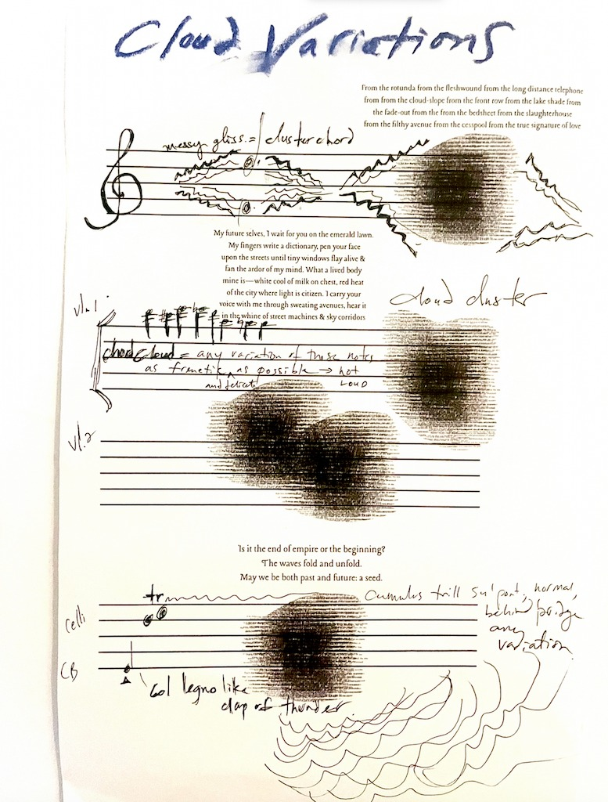

Sound Design and Composition With Jessie Char

*Cloud Variations at Carnegie Hall*
October 23rd, 2025
Performed by The Knights
Composed by J. Mae Barizo
Directed by George R. Miller

*JOB at Soho Playhouse // The Connelly Theater*
(NYT Critic's Pick) (Vulture) (WNYC) (Byline)
Directed by Michael Herwitz
Written by Max Wolf Friedlich
Produced by Alex Levy, Hannah Getts, Russell Kahn, and Danielle Perelman
Photo by Emilio Madrid

*Invasive Species at The Tank // Vineyard Theater*
Directed by Michael Breslin
Written by Maia Novi
Produced by Folk Productions-Danielle Perelman-Arterial Projects
Photo by Julieta Cervantes
GOOP ROUTINE MIXTAPE AVAILABLE HERE!!